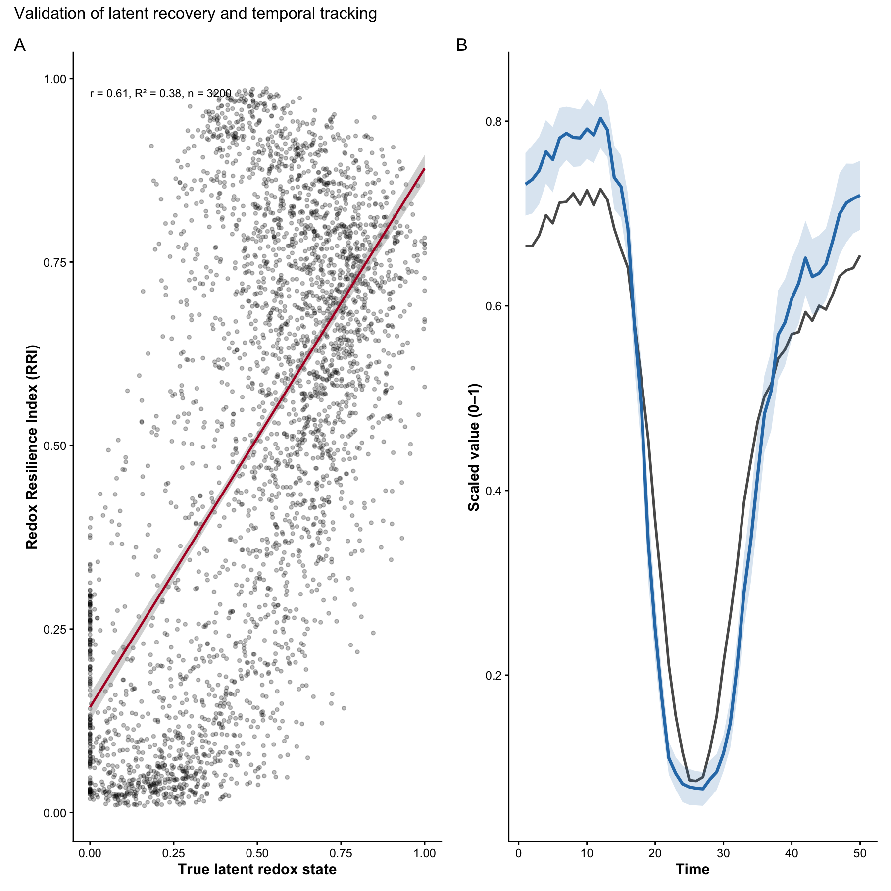
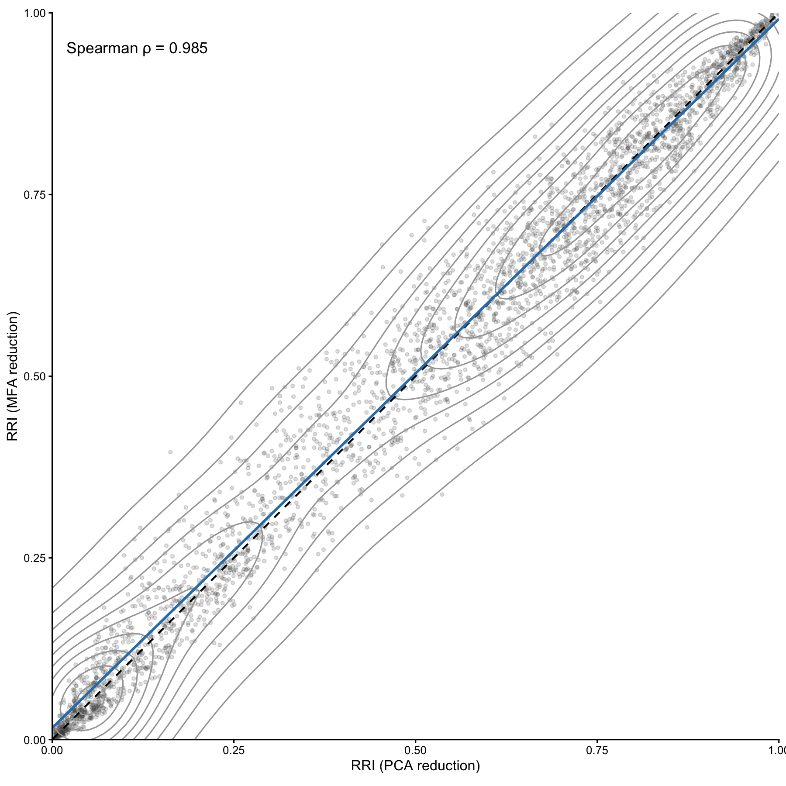
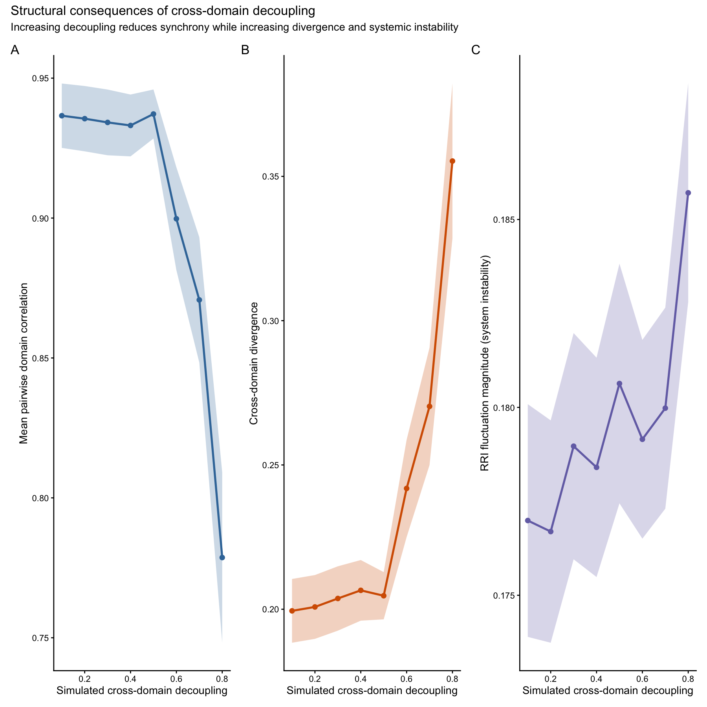
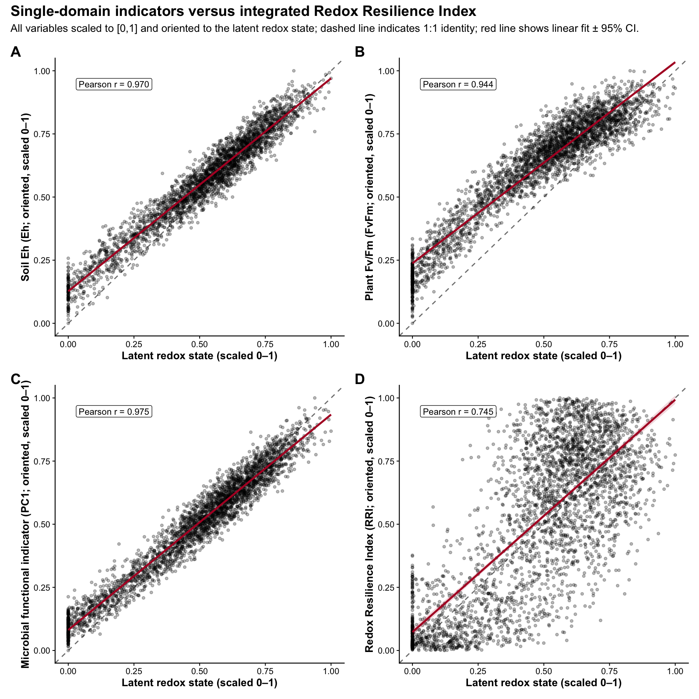
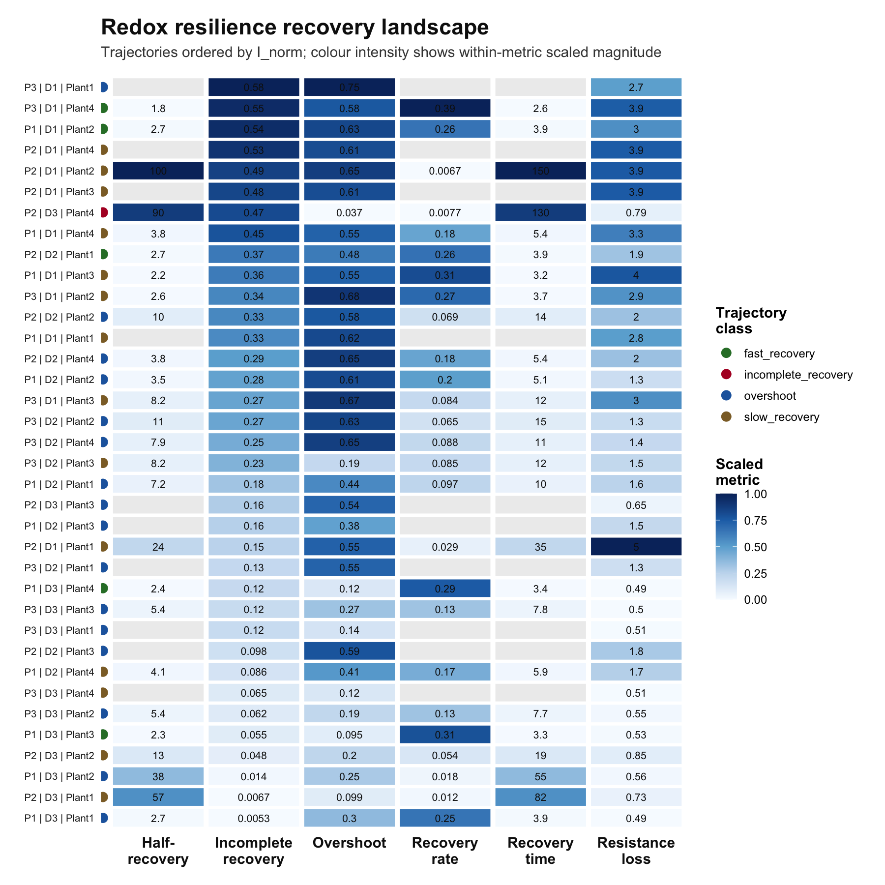

Overview
RedoxRRI formalises holobiont resilience as coordinated redox buffering across plant, soil, and microbial compartments. Rather than analysing each domain independently, the framework models resilience as an emergent, cross-domain property that can be expressed either as a scalar index (RRI) or as a compositional allocation in simplex space.
RedoxRRI provides a transparent and extensible framework to quantify holobiont redox resilience by integrating three complementary domains:
- Plant physiology (oxidative / nitrosative buffering and stress traits)
- Soil redox stability (Eh and redox-coupled chemistry)
- Microbial resilience
Microbial resilience, represented as a single blended domain that can incorporate: microbial abundance or functional composition (micro_data) microbial network organization (igraph network metrics) The primary output of the package is: a per-sample Redox Resilience Index (RRI) scaled to [0,1]) a ternary-ready compositional representation (Physio, Soil, Micro) with row sums equal to 1
an optional system-level index stored as attr(x, “RRI_index”)
The simulate_redox_holobiont() can create a rich
synthetic benchmark dataset with plant, soil, microbial, trait, and
optional gene-level layers. This richness is useful for demonstration,
testing, and method development, but users do not need
to measure every variable generated by the simulator.
RedoxRRI is designed to work with both:
- simulated benchmark data generated inside the package, and
- user-supplied external datasets from field, greenhouse, mesocosm, or laboratory experiments.
The key requirement is not that every simulated variable is present.
The key requirement is that the input tables are
row-aligned, meaning that row i in each
domain table refers to the same biological sample as row i
in id.
At minimum, users should provide:
-
id: sample metadata, including time and grouping variables if needed; -
ROS_flux: one or more plant or physiological variables; -
Eh_stability: one or more soil redox or soil chemistry variables; -
micro_data: one or more microbial abundance, functional, trait, or molecular variables.
Conceptual model
Domain-level aggregation implemented in
rri_pipeline_st()
Each domain (Physiology, Soil, and Microbial) is first summarized into a one-dimensional latent score per sample using a user-selected method (e.g., PCA, FA, UMAP, or WGCNA). These latent scores are then scaled to the range [0, 1].
The Redox Resilience Index (RRI) is computed as a weighted linear combination of the scaled domain scores. The domain weights are user-defined and must sum to one. Higher RRI values indicate samples with stronger physiological buffering, greater soil redox stability, and higher microbial resilience relative to other samples in the same dataset.
Optional coupling terms can be included to capture coherence among domains, allowing the index to reflect not only domain magnitudes but also their agreement or joint stability.
Microbial domain as a blended score
To preserve a three-part (Physiology-Soil-Microbial) ternary representation, microbial resilience is modeled as a single blended domain score.
When both microbial abundance (or functional composition) data and
microbial network data are available, the microbial domain score is
computed as a weighted blend of the two components. The parameter
alpha_micro controls their relative contribution:
-
alpha_micro = 1: abundance or functional composition only
-
alpha_micro = 0: network structure only
-
alpha_micro = 0.5: equal contribution (default)
This design allows flexible emphasis on microbial composition, microbial function, or both. Functional information can include gene abundance, functional gene coverage, metagenomic features, metatranscriptomic expression, or gene upregulation summaries. These inputs are integrated into a single microbial resilience domain while maintaining a consistent three-domain representation suitable for compositional and ternary visualization.
For example, users may include variables such as:
- taxonomic abundance features, such as ASVs, OTUs, MAGs, or taxa;
- microbial trait scores;
- functional gene abundance, such as
narG,nirK,nosZ,mtrA,dsrA, ormcrA; - metatranscriptomic expression values;
- log2 fold-change or upregulation scores;
- pathway-level or guild-level summaries;
- redox process indicators, such as denitrification, sulfate reduction, methanogenesis, extracellular electron transfer, or ROS detoxification scores.
These features can be combined into one microbial feature table
before running rri_pipeline_st():
Simulated example data
All data used in this vignette are fully simulated and are provided solely for demonstration and testing purposes.
generated using simulate_redox_holobiont() and mimics
qualitative properties of redox-ecological systems, including: correlated plant physiological traits soil redox gradients and stability microbial functional heterogeneity spatial grouping and temporal structure The simulation does not represent any real experiment, species, site, or ecosystem.
Reproducibility
All analyses in this vignette are fully reproducible and rely only on simulated data generated within the package.
## Warning: package 'dplyr' was built under R version 4.5.2##
## Attaching package: 'dplyr'## The following objects are masked from 'package:stats':
##
## filter, lag## The following objects are masked from 'package:base':
##
## intersect, setdiff, setequal, union## Warning: package 'tibble' was built under R version 4.5.2
if (!requireNamespace("patchwork", quietly = TRUE)) {
message("Optional package 'patchwork' not installed.")
}
# Reproducible simulation
set.seed(1342)
sim <- simulate_redox_holobiont(
n_plot = 4,
n_depth = 2,
n_plant = 4,
n_time = 12,
p_micro = 80,
p_gene = 36,
gene_mode = "both",
disturbance_strength = 0.5,
decoupling = 0.3,
stochastic_reassembly = TRUE
)
# Inspect object structure
str(sim, max.level = 1)## List of 10
## $ id :'data.frame': 384 obs. of 4 variables:
## $ ROS_flux :'data.frame': 384 obs. of 14 variables:
## $ Eh_stability :'data.frame': 384 obs. of 18 variables:
## $ micro_data :'data.frame': 384 obs. of 80 variables:
## $ micro_traits :'data.frame': 384 obs. of 15 variables:
## $ gene_abundance :'data.frame': 384 obs. of 36 variables:
## $ gene_expression:'data.frame': 384 obs. of 36 variables:
## $ gene_log2fc :'data.frame': 384 obs. of 36 variables:
## $ latent_truth : num [1:384] 0.733 0.832 0.877 0.701 0.472 ...
## $ graph : NULL
# Available simulated components
names(sim)## [1] "id" "ROS_flux" "Eh_stability" "micro_data"
## [5] "micro_traits" "gene_abundance" "gene_expression" "gene_log2fc"
## [9] "latent_truth" "graph"
# Experimental design
utils::head(sim$id)## plot depth plant_id time
## 1 P1 D1 Plant1 1
## 2 P2 D1 Plant1 1
## 3 P3 D1 Plant1 1
## 4 P4 D1 Plant1 1
## 5 P1 D2 Plant1 1
## 6 P2 D2 Plant1 1
# Plant physiology variables
names(sim$ROS_flux)## [1] "SPAD" "FvFm" "PhiPSII"
## [4] "NPQ" "ROL" "root_exudates"
## [7] "organic_acids" "phenolics" "exudate_redox_activity"
## [10] "aerenchyma" "ROL_barrier" "root_oxidative_stress"
## [13] "root_redox_buffering" "Fe_plaque_proxy"
# Soil redox variables
names(sim$Eh_stability)## [1] "Eh" "pH"
## [3] "water_content" "air_filled_porosity"
## [5] "pore_connectivity" "aqueous_connectivity"
## [7] "oxygen_availability" "DOC"
## [9] "dissolved_organic_matter_redox" "EAC"
## [11] "EDC" "redox_buffer_capacity"
## [13] "Fe2.Fe3" "Mn2.Mn4"
## [15] "NH4.NO3" "sulfide_risk"
## [17] "methane_potential" "nitrate_reduction_potential"
# Microbial abundance matrix
dim(sim$micro_data)## [1] 384 80
# Functional microbial traits
names(sim$micro_traits)## [1] "aerobic_respiration" "denitrification"
## [3] "Fe_Mn_reduction" "EET_potential"
## [5] "sulfate_reduction" "methanogenesis"
## [7] "flavin_mediator" "phenazine_mediator"
## [9] "quinone_humic_shuttle" "microbial_ROS_detox"
## [11] "AMF_connectivity" "protist_grazing"
## [13] "viral_lysis" "microbial_memory"
## [15] "microbial_redox_flexibility"
# Optional functional gene abundance
if (!is.null(sim$gene_abundance)) {
names(sim$gene_abundance)[1:10]
}## [1] "coxA_cov" "coxB_cov" "cyoA_cov" "cyoB_cov" "sodA_cov" "katG_cov"
## [7] "narG_cov" "narH_cov" "napA_cov" "nirK_cov"
# Optional metatranscriptomic expression
if (!is.null(sim$gene_expression)) {
names(sim$gene_expression)[1:10]
}## [1] "coxA_MetaT" "coxB_MetaT" "cyoA_MetaT" "cyoB_MetaT" "sodA_MetaT"
## [6] "katG_MetaT" "narG_MetaT" "narH_MetaT" "napA_MetaT" "nirK_MetaT"
# Optional gene upregulation summaries
if (!is.null(sim$gene_log2fc)) {
names(sim$gene_log2fc)[1:10]
}## [1] "coxA_log2FC" "coxB_log2FC" "cyoA_log2FC" "cyoB_log2FC" "sodA_log2FC"
## [6] "katG_log2FC" "narG_log2FC" "narH_log2FC" "napA_log2FC" "nirK_log2FC"The simulated object contains: ROS_flux: plant physiological traits (samples × variables) Eh_stability: soil redox variables micro_data: microbial functional features id: sample metadata (spatial and temporal structure) graph (optional): an igraph network or list of networks
Computing the Redox Resilience Index
Resistance = immediate deviation in redox potential after disturbance Resilience = rate or magnitude of redox recovery
if (!requireNamespace("FactoMineR", quietly = TRUE)) {
knitr::opts_chunk$set(eval = FALSE)
}
# At minimum, this can be only sim$micro_data.
micro_features <- sim$micro_data
res <- rri_pipeline_st(
ROS_flux = sim$ROS_flux,
Eh_stability = sim$Eh_stability,
micro_data = micro_features,
id = sim$id,
reducer = "per_domain",
scaling = "pnorm",
direction_phys = "auto",
direction_anchor_phys = "FvFm",
direction_soil = "auto",
direction_anchor_soil = "Eh",
direction_micro = "higher_is_better"
)
utils::head(res$row_scores)## Physio Soil Micro RRI Micro_abundance Micro_network
## 1 0.8699117 0.8845293 0.2398984 0.9114675 0.2398984 NA
## 2 0.9144952 0.9401114 0.2154539 0.9386268 0.2154539 NA
## 3 0.8731187 0.9374320 0.2022485 0.9213649 0.2022485 NA
## 4 0.7563769 0.9378121 0.2395087 0.8816193 0.2395087 NA
## 5 0.5007963 0.4907704 0.4374266 0.4540520 0.4374266 NA
## 6 0.5087094 0.4678307 0.3385583 0.3824589 0.3385583 NA
## Micro_mfa
## 1 NA
## 2 NA
## 3 NA
## 4 NA
## 5 NA
## 6 NA
##or
micro_features_full <- sim$micro_data
if (!is.null(sim$micro_traits)) {
micro_features_full <- cbind(micro_features_full, sim$micro_traits)
}
if (!is.null(sim$gene_abundance)) {
micro_features_full <- cbind(micro_features_full, sim$gene_abundance)
}
if (!is.null(sim$gene_log2fc)) {
micro_features_full <- cbind(micro_features_full, sim$gene_log2fc)
}
res <- rri_pipeline_st(
ROS_flux = sim$ROS_flux,
Eh_stability = sim$Eh_stability,
micro_data = micro_features_full,
id = sim$id,
reducer = "per_domain",
scaling = "pnorm",
direction_phys = "auto",
direction_anchor_phys = "FvFm",
direction_soil = "auto",
direction_anchor_soil = "Eh",
direction_micro = "higher_is_better"
)
utils::head(res$row_scores)## Physio Soil Micro RRI Micro_abundance Micro_network
## 1 0.8699117 0.8845293 0.20315229 0.9124499 0.20315229 NA
## 2 0.9144952 0.9401114 0.07339124 0.9174502 0.07339124 NA
## 3 0.8731187 0.9374320 0.11975166 0.9113360 0.11975166 NA
## 4 0.7563769 0.9378121 0.24088668 0.8927195 0.24088668 NA
## 5 0.5007963 0.4907704 0.46342019 0.4582560 0.46342019 NA
## 6 0.5087094 0.4678307 0.36355166 0.3811152 0.36355166 NA
## Micro_mfa
## 1 NA
## 2 NA
## 3 NA
## 4 NA
## 5 NA
## 6 NA
# Inspect compositional Physio-Soil-Micro allocation.
utils::head(res$row_scores_comp)## Physio Soil Micro RRI
## 1 0.4443782 0.4518453 0.10377656 0.9124499
## 2 0.4743238 0.4876102 0.03806604 0.9174502
## 3 0.4523223 0.4856400 0.06203777 0.9113360
## 4 0.3908772 0.4846385 0.12448437 0.8927195
## 5 0.3441930 0.3373023 0.31850472 0.4582560
## 6 0.3796079 0.3491035 0.27128863 0.3811152
# System-level RRI summary.
res$meta$rri_index## [1] 0.5044259Interpreting the compositional output
The compositional output is stored in res$row_scores_comp.
head(res$row_scores_comp)## Physio Soil Micro RRI
## 1 0.4443782 0.4518453 0.10377656 0.9124499
## 2 0.4743238 0.4876102 0.03806604 0.9174502
## 3 0.4523223 0.4856400 0.06203777 0.9113360
## 4 0.3908772 0.4846385 0.12448437 0.8927195
## 5 0.3441930 0.3373023 0.31850472 0.4582560
## 6 0.3796079 0.3491035 0.27128863 0.3811152The domain components satisfy:
## [1] 1 1 1 1 1 1Microbial subcomponents
When microbial abundance and/or network data are available, the output also includes the corresponding latent scores:
## Min. 1st Qu. Median Mean 3rd Qu. Max.
## 0.06698 0.23397 0.40135 0.46666 0.65748 0.99915Ternary visualization
This plot requires suggested packages: ggtern, ggplot2, and viridis.
if (requireNamespace("ggtern", quietly = TRUE) &&
requireNamespace("ggplot2", quietly = TRUE) &&
requireNamespace("patchwork", quietly = TRUE) &&
requireNamespace("viridis", quietly = TRUE)) {
pt1<- plot_RRI_ternary(res$row_scores_comp)
} else {
message("Install ggtern, ggplot2, and viridis to enable ternary plotting.")
}## Warning in ggplot2::geom_point(data = centroid, ggplot2::aes(x = .data$Physio,
## : Ignoring unknown aesthetics: zChoosing latent-dimension methods
Different domains may justify different latent representations: physiology: pca, fa soil: pca, wgcna (when co-regulated redox syndromes are expected) microbial abundance: pca, nmf, wgcna nonlinear regimes: umap
Below we illustrate alternative specifications when suggested packages are available.
specA <- rri_pipeline_st(
ROS_flux = sim$ROS_flux,
Eh_stability = sim$Eh_stability,
micro_data = sim$micro_data,
graph = sim$graph,
alpha_micro = 0.6,
method_phys = "pca",
method_soil = "pca",
method_micro = "pca"
)
specA$meta$rri_index## [1] 0.3611232Index
specB <- res
if (requireNamespace("uwot", quietly = TRUE)) {
specB <- rri_pipeline_st(
ROS_flux = sim$ROS_flux,
Eh_stability = sim$Eh_stability,
micro_data = sim$micro_data,
method_phys = "umap",
method_soil = "umap",
method_micro = "pca"
)
specB$meta$rri_index
} else {
message("uwot not installed; skipping example.")
}## [1] 0.4941195Second example: compositional geometry and temporal resilience
In this example, we illustrate three advanced features of RedoxRRI:
- Compositional projection using clr geometry
- A covariance-based compensation term
- Rolling temporal resilience dynamics
This specification more closely reflects longitudinal ecological data where resilience is evaluated through time rather than at a single snapshot.
set.seed(91202)
res_adv <- rri_pipeline_st(
ROS_flux = sim$ROS_flux,
Eh_stability = sim$Eh_stability,
micro_data = sim$micro_data,
id = sim$id,
time_col = "time",
group_cols = c("plot", "depth"),
mode = "rolling",
window = 4,
comp_space = "clr",
add_compensation = TRUE,
compensation_weight = 0.2,
direction_phys = "auto",
direction_anchor_phys = "FvFm",
direction_soil = "auto",
direction_anchor_soil = "Eh"
)
head(res_adv$row_scores_comp)## Physio Soil Micro RRI
## 1 0.5117374 0.4601309 0.028131650 0.9830264
## 2 0.4881066 0.5092640 0.002629478 0.7936467
## 3 0.4409773 0.5393078 0.019714940 0.5548713
## 4 0.4110692 0.5499639 0.038966937 0.6358989
## 5 0.4412888 0.5086191 0.050092148 0.9100871
## 6 0.4662909 0.5152950 0.018414039 0.5660538## [1] 1 1
if (requireNamespace("ggtern", quietly = TRUE) &&
requireNamespace("ggplot2", quietly = TRUE) &&
requireNamespace("viridis", quietly = TRUE)) {
plot_RRI_ternary(
res_adv$row_scores_comp,
centroid_method = "auto"
)
} else {
message("Install ggtern, ggplot2, and viridis to enable ternary plotting.")
}## Warning in ggplot2::geom_point(data = centroid, ggplot2::aes(x = .data$Physio,
## : Ignoring unknown aesthetics: z
Set the domain directions as:
direction_phys = “lower_is_better” direction_soil = “lower_is_better” direction_micro = “higher_is_better”
set.seed(47162)
sim <- simulate_redox_holobiont(
seed = 47162,
n_plot = 4,
n_depth = 4,
n_plant = 4,
n_time = 50,
p_micro = 240,
disturbance_strength = 0.6,
decoupling = 0.6,
zero_inflation = 0.4,
MNAR_strength = 0.5,
stochastic_reassembly = TRUE
)
res_main <- rri_pipeline_st(
ROS_flux = sim$ROS_flux,
Eh_stability = sim$Eh_stability,
micro_data = sim$micro_data,
id = sim$id,
time_col = "time",
group_cols = c("plot", "depth", "plant_id"),
mode = "snapshot",
reducer = "mfa",
scaling = "pnorm",
comp_space = "clr",
add_compensation = TRUE,
compensation_weight = 0.2,
direction_phys = "lower_is_better",
direction_soil = "lower_is_better",
direction_micro = "higher_is_better"
)
df_val <- tibble::tibble(
latent = sim$latent_truth,
rri = res_main$row_scores$RRI,
time = sim$id$time,
plot = sim$id$plot,
depth = sim$id$depth,
plant_id = sim$id$plant_id
)
cor_complete <- function(x, y, method = "pearson") {
stats::cor(x, y, use = "complete.obs", method = method)
}
n_obs <- nrow(df_val)
cor_val <- cor_complete(df_val$latent, df_val$rri)
lm_fit <- stats::lm(rri ~ latent, data = df_val)
r_sq <- summary(lm_fit)$r.squared
stat_label <- paste0(
"r = ", round(cor_val, 2),
", R² = ", round(r_sq, 2),
", n = ", n_obs
)
p2A <- ggplot2::ggplot(df_val, ggplot2::aes(x = latent, y = rri)) +
ggplot2::geom_point(alpha = 0.25, size = 1.1) +
ggplot2::geom_smooth(
method = "lm",
se = TRUE,
color = "#B2182B",
linewidth = 0.9
) +
ggplot2::annotate(
"text",
x = min(df_val$latent, na.rm = TRUE),
y = max(df_val$rri, na.rm = TRUE),
hjust = 0,
vjust = 1,
size = 3.2,
label = stat_label
) +
ggplot2::labs(
x = "True latent redox state",
y = "Redox Resilience Index (RRI)"
) +
theme_ems()
df_ts <- df_val |>
dplyr::group_by(time) |>
dplyr::summarise(
latent_mean = mean(latent, na.rm = TRUE),
rri_mean = mean(rri, na.rm = TRUE),
rri_se = stats::sd(rri, na.rm = TRUE) / sqrt(dplyr::n()),
.groups = "drop"
) |>
dplyr::mutate(
rri_lo = rri_mean - 1.96 * rri_se,
rri_hi = rri_mean + 1.96 * rri_se
)
p2B <- ggplot2::ggplot(df_ts, ggplot2::aes(x = time)) +
ggplot2::geom_line(
ggplot2::aes(y = latent_mean),
color = "grey35",
linewidth = 1
) +
ggplot2::geom_ribbon(
ggplot2::aes(ymin = rri_lo, ymax = rri_hi),
fill = "#2C7BB6",
alpha = 0.18
) +
ggplot2::geom_line(
ggplot2::aes(y = rri_mean),
color = "#2C7BB6",
linewidth = 1.2
) +
ggplot2::labs(
x = "Time",
y = "Scaled value (0–1)"
) +
theme_ems()
p2 <- p2A + p2B +
patchwork::plot_annotation(
title = "Validation of latent recovery and temporal tracking",
tag_levels = "A"
)
p2## `geom_smooth()` using formula = 'y ~ x'
Compensation robustness
## Warning: package 'purrr' was built under R version 4.5.2## Warning: package 'ggplot2' was built under R version 4.5.2
scale01 <- function(x) {
rng <- range(x, na.rm = TRUE)
if (diff(rng) == 0) {
return(rep(0.5, length(x)))
}
(x - rng[1]) / diff(rng)
}
cor_complete <- function(x, y, method = "spearman") {
stats::cor(x, y, use = "complete.obs", method = method)
}
# Simulate one reference dataset
set.seed(4716254)
sim <- simulate_redox_holobiont(
seed = 4716254,
n_plot = 4,
n_depth = 4,
n_plant = 4,
n_time = 50,
p_micro = 240,
disturbance_strength = 0.6,
decoupling = 0.6,
zero_inflation = 0.4,
MNAR_strength = 0.5,
stochastic_reassembly = TRUE
)
# MFA-based RRI
res_mfa <- rri_pipeline_st(
ROS_flux = sim$ROS_flux,
Eh_stability = sim$Eh_stability,
micro_data = sim$micro_data,
id = sim$id,
time_col = "time",
group_cols = c("plot", "depth", "plant_id"),
mode = "snapshot",
reducer = "mfa",
scaling = "pnorm",
comp_space = "clr",
add_compensation = TRUE,
compensation_weight = 0.2,
direction_phys = "lower_is_better",
direction_soil = "lower_is_better",
direction_micro = "higher_is_better"
)
# PCA / per-domain RRI
res_pca <- rri_pipeline_st(
ROS_flux = sim$ROS_flux,
Eh_stability = sim$Eh_stability,
micro_data = sim$micro_data,
id = sim$id,
time_col = "time",
group_cols = c("plot", "depth", "plant_id"),
mode = "snapshot",
reducer = "per_domain",
scaling = "pnorm",
comp_space = "clr",
add_compensation = TRUE,
compensation_weight = 0.2,
direction_phys = "lower_is_better",
direction_soil = "lower_is_better",
direction_micro = "higher_is_better"
)
# Prepare comparison dataframe
df_fig3 <- tibble(
rri_pca = scale01(res_pca$row_scores$RRI),
rri_mfa = scale01(res_mfa$row_scores$RRI)
)
rho <- cor_complete(df_fig3$rri_pca, df_fig3$rri_mfa, method = "spearman")
# Figure 3
fig3 <- ggplot(df_fig3, aes(x = rri_pca, y = rri_mfa)) +
geom_point(alpha = 0.18, size = 1.2, color = "grey30") +
stat_density_2d(
color = "grey65",
linewidth = 0.6
) +
geom_abline(
slope = 1,
intercept = 0,
linetype = "dashed",
color = "black",
linewidth = 0.8
) +
geom_smooth(
method = "lm",
se = FALSE,
color = "#2C7FB8",
linewidth = 1.1
) +
annotate(
"text",
x = 0.02,
y = 0.96,
hjust = 0,
vjust = 1,
size = 5,
label = paste0("Spearman \u03c1 = ", round(rho, 3))
) +
coord_equal(xlim = c(0, 1), ylim = c(0, 1), expand = FALSE) +
labs(
x = "RRI (PCA reduction)",
y = "RRI (MFA reduction)"
) +
theme_classic(base_size = 13)
fig3## `geom_smooth()` using formula = 'y ~ x'
Structural consequences of cross-domain decoupling
To understand how cross-domain coupling contributes to holobiont stability, we simulate systems with increasing levels of domain decoupling and quantify three structural properties of the resulting RRI decomposition:
- Mean pairwise correlation among domains
- Net covariance contribution to aggregate variance
- Cross-domain coordination strength
Higher decoupling should reduce coordination among domains and therefore we expect these metrics to decline with increasing decoupling.
## Warning: package 'tidyr' was built under R version 4.5.2
library(tibble)
library(purrr)
# decoupling gradient
dec_grid <- seq(0.1, 0.8, by = 0.1)
# number of stochastic replicates
n_rep <- 50
compute_structure <- function(decoupling, rep){
sim <- simulate_redox_holobiont(
seed = 1000 + rep + round(decoupling * 100),
decoupling = decoupling
)
res <- rri_pipeline_st(
ROS_flux = sim$ROS_flux,
Eh_stability = sim$Eh_stability,
micro_data = sim$micro_data,
reducer = "mfa",
scaling = "pnorm",
comp_space = "clr",
add_compensation = TRUE,
compensation_weight = 0.2
)
domains <- res$row_scores[, c("Physio","Soil","Micro")]
# standardize domains
domains <- scale(domains)
# Panel A — synchrony
cor_mat <- cor(domains)
mean_corr <- mean(cor_mat[upper.tri(cor_mat)])
# Panel B — domain divergence
domain_divergence <- mean(apply(domains, 1, sd))
# Panel C — system instability
rri_instability <- mean(abs(diff(res$row_scores$RRI)), na.rm = TRUE)
tibble(
decoupling = decoupling,
mean_corr = mean_corr,
domain_divergence = domain_divergence,
rri_instability = rri_instability
)
}
# run simulations
df <- tidyr::expand_grid(
decoupling = dec_grid,
rep = 1:n_rep
) |>
pmap_dfr(~compute_structure(..1, ..2))
# rename to avoid summarise masking bug
df <- df |> rename(mean_corr_raw = mean_corr)
# summarise statistics
df_summary <- df |>
group_by(decoupling) |>
summarise(
mean_corr = mean(mean_corr_raw),
corr_se = sd(mean_corr_raw) / sqrt(n()),
div_mean = mean(domain_divergence),
div_se = sd(domain_divergence) / sqrt(n()),
instab_mean = mean(rri_instability),
instab_se = sd(rri_instability) / sqrt(n()),
.groups = "drop"
)
# Panel A — domain synchrony
pA <- ggplot(df_summary, aes(decoupling, mean_corr)) +
geom_ribbon(
aes(ymin = mean_corr - corr_se,
ymax = mean_corr + corr_se),
fill = "#3b78a8",
alpha = 0.25
) +
geom_line(color = "#3b78a8", linewidth = 1) +
geom_point(color = "#3b78a8", size = 2) +
labs(
x = "Simulated cross-domain decoupling",
y = "Mean pairwise domain correlation"
) +
theme_classic()
# Panel B — domain divergence
pB <- ggplot(df_summary, aes(decoupling, div_mean)) +
geom_ribbon(
aes(ymin = div_mean - div_se,
ymax = div_mean + div_se),
fill = "#d55e00",
alpha = 0.25
) +
geom_line(color = "#d55e00", linewidth = 1) +
geom_point(color = "#d55e00", size = 2) +
labs(
x = "Simulated cross-domain decoupling",
y = "Cross-domain divergence"
) +
theme_classic()
# Panel C — system instability
pC <- ggplot(df_summary, aes(decoupling, instab_mean)) +
geom_ribbon(
aes(ymin = instab_mean - instab_se,
ymax = instab_mean + instab_se),
fill = "#7570b3",
alpha = 0.25
) +
geom_line(color = "#7570b3", linewidth = 1) +
geom_point(color = "#7570b3", size = 2) +
labs(
x = "Simulated cross-domain decoupling",
y = "RRI fluctuation magnitude (system instability)"
) +
theme_classic()
# combine panels
fig4 <- (pA | pB | pC) +
plot_annotation(
title = "Structural consequences of cross-domain decoupling",
subtitle = "Increasing decoupling reduces synchrony while increasing divergence and systemic instability",
tag_levels = "A"
)
fig4
| Panel | Metric | Interpretation |
|---|---|---|
| A | Mean pairwise correlation | Domain synchrony |
| B | Domain divergence | Separation of responses |
| C | RRI fluctuation magnitude | System instability |
Single-domain indicators vs integrated RRI
plot × depth × plant_id × time
if (requireNamespace("dplyr", quietly = TRUE)) library(dplyr)
if (requireNamespace("tibble", quietly = TRUE)) library(tibble)
if (requireNamespace("patchwork", quietly = TRUE)) library(patchwork)
if (requireNamespace("ggplot2", quietly = TRUE)) library(ggplot2)
# ---- Helpers ----
scale01 <- function(x) {
x <- as.numeric(x)
r <- range(x, na.rm = TRUE)
if (!all(is.finite(r)) || diff(r) == 0) {
return(rep(0.5, length(x)))
}
(x - r[1]) / diff(r)
}
orient_to_reference <- function(x, reference) {
x_scaled <- scale01(x)
ref_scaled <- scale01(reference)
r <- stats::cor(ref_scaled, x_scaled, use = "complete.obs")
if (is.finite(r) && r < 0) {
x_scaled <- 1 - x_scaled
}
x_scaled
}
pick_col <- function(df, patterns, df_name = deparse(substitute(df))) {
df <- as.data.frame(df)
nm <- names(df)
hit <- which(Reduce(
`|`,
lapply(patterns, function(p) grepl(p, nm, ignore.case = TRUE))
))
if (length(hit) == 0) {
stop(
"Could not find a matching column in ", df_name, ".\n",
"Tried patterns: ", paste(patterns, collapse = ", "), "\n",
"Available columns: ", paste(nm, collapse = ", "),
call. = FALSE
)
}
nm[hit[1]]
}
micro_indicator_pc1 <- function(micro_data) {
micro_data <- as.data.frame(micro_data)
X <- suppressWarnings(as.matrix(micro_data))
storage.mode(X) <- "double"
keep <- colSums(is.finite(X)) > 0
X <- X[, keep, drop = FALSE]
if (ncol(X) == 0) {
return(rep(NA_real_, nrow(micro_data)))
}
X <- log1p(pmax(X, 0))
sds <- apply(X, 2, stats::sd, na.rm = TRUE)
X <- X[, is.finite(sds) & sds > 0, drop = FALSE]
if (ncol(X) == 0) {
return(rep(NA_real_, nrow(micro_data)))
}
pc <- stats::prcomp(X, center = TRUE, scale. = TRUE)
as.numeric(pc$x[, 1])
}
theme_rri_nature <- function(base_size = 11) {
ggplot2::theme_classic(base_size = base_size) +
ggplot2::theme(
axis.line = ggplot2::element_line(linewidth = 0.45, colour = "black"),
axis.ticks = ggplot2::element_line(linewidth = 0.4, colour = "black"),
axis.title = ggplot2::element_text(face = "bold"),
plot.tag = ggplot2::element_text(face = "bold", size = 15),
plot.title = ggplot2::element_text(face = "bold"),
strip.background = ggplot2::element_blank(),
strip.text = ggplot2::element_text(face = "bold"),
panel.grid = ggplot2::element_blank()
)
}
make_panel <- function(df, y_col, y_lab, tag) {
r_val <- stats::cor(
df$latent,
df[[y_col]],
use = "complete.obs",
method = "pearson"
)
ggplot2::ggplot(df, ggplot2::aes(x = latent, y = .data[[y_col]])) +
ggplot2::geom_abline(
slope = 1,
intercept = 0,
linetype = "dashed",
colour = "grey50",
linewidth = 0.55
) +
ggplot2::geom_point(
alpha = 0.28,
size = 1.05,
colour = "black"
) +
ggplot2::geom_smooth(
method = "lm",
se = TRUE,
colour = "#B2182B",
fill = "#B2182B",
alpha = 0.16,
linewidth = 0.95
) +
ggplot2::annotate(
"label",
x = 0.03,
y = 0.97,
hjust = 0,
vjust = 1,
size = 3.2,
label = paste0("Pearson r = ", format(round(r_val, 3), nsmall = 3)),
fill = "white",
label.size = 0.22
) +
ggplot2::coord_cartesian(xlim = c(0, 1), ylim = c(0, 1)) +
ggplot2::labs(
x = "Latent redox state (scaled 0–1)",
y = y_lab,
tag = tag
) +
theme_rri_nature()
}
# ---- sim and res_main must match ----
stopifnot(nrow(sim$id) == nrow(res_main$row_scores))
# ---- Choose representative domain variables ----
eh_col <- pick_col(
sim$Eh_stability,
patterns = c("^Eh$", "Eh", "redox"),
df_name = "sim$Eh_stability"
)
fvfm_col <- pick_col(
sim$ROS_flux,
patterns = c("^FvFm$", "Fv/Fm", "fvfm", "photochem", "PSII"),
df_name = "sim$ROS_flux"
)
# ---- Microbial indicator: functional layer preferred ----
micro_block <- cbind(
sim$micro_traits,
sim$gene_abundance,
sim$gene_log2fc
)
micro_pc1 <- micro_indicator_pc1(micro_block)
# ---- Orient all indicators to latent redox state ----
latent_scaled <- scale01(sim$latent_truth)
df_6 <- tibble::tibble(
latent = latent_scaled,
eh = orient_to_reference(sim$Eh_stability[[eh_col]], latent_scaled),
fvfm = orient_to_reference(sim$ROS_flux[[fvfm_col]], latent_scaled),
micro_pc1 = orient_to_reference(micro_pc1, latent_scaled),
rri = orient_to_reference(res_main$row_scores$RRI, latent_scaled)
)
# ---- Build panels ----
pA <- make_panel(
df_6,
y_col = "eh",
y_lab = paste0("Soil Eh (", eh_col, "; oriented, scaled 0–1)"),
tag = "A"
)## Warning in ggplot2::annotate("label", x = 0.03, y = 0.97, hjust = 0, vjust = 1,
## : Ignoring unknown parameters: `label.size`
pB <- make_panel(
df_6,
y_col = "fvfm",
y_lab = paste0("Plant Fv/Fm (", fvfm_col, "; oriented, scaled 0–1)"),
tag = "B"
)## Warning in ggplot2::annotate("label", x = 0.03, y = 0.97, hjust = 0, vjust = 1,
## : Ignoring unknown parameters: `label.size`
pC <- make_panel(
df_6,
y_col = "micro_pc1",
y_lab = "Microbial functional indicator (PC1; oriented, scaled 0–1)",
tag = "C"
)## Warning in ggplot2::annotate("label", x = 0.03, y = 0.97, hjust = 0, vjust = 1,
## : Ignoring unknown parameters: `label.size`
pD <- make_panel(
df_6,
y_col = "rri",
y_lab = "Redox Resilience Index (RRI; oriented, scaled 0–1)",
tag = "D"
)## Warning in ggplot2::annotate("label", x = 0.03, y = 0.97, hjust = 0, vjust = 1,
## : Ignoring unknown parameters: `label.size`
fig_6 <- (pA | pB) / (pC | pD) +
patchwork::plot_annotation(
title = "Single-domain indicators versus integrated Redox Resilience Index",
subtitle = paste(
"All variables scaled to [0,1] and oriented to the latent redox state;",
"dashed line indicates 1:1 identity; red line shows linear fit ± 95% CI."
),
theme = ggplot2::theme(
plot.title = ggplot2::element_text(face = "bold", size = 15),
plot.subtitle = ggplot2::element_text(size = 11)
)
)
fig_6## `geom_smooth()` using formula = 'y ~ x'## Warning: Removed 224 rows containing non-finite outside the scale range
## (`stat_smooth()`).## Warning: Removed 224 rows containing missing values or values outside the scale range
## (`geom_point()`).## `geom_smooth()` using formula = 'y ~ x'
## `geom_smooth()` using formula = 'y ~ x'
## `geom_smooth()` using formula = 'y ~ x'
| Indicator | r |
|---|---|
| Soil Eh | 0.97 |
| Plant Fv/Fm | 0.93 |
| Microbiome PC1 | 0.95 |
| RRI | 0.75 |
RRI plotting
# ---- Theme ----
theme_ems <- function(base_size = 12) {
theme_classic(base_size = base_size) +
theme(
plot.title = element_text(face = "bold"),
axis.title = element_text(face = "bold"),
legend.title = element_text(face = "bold"),
panel.grid = element_blank()
)
}
res_snap <- rri_pipeline_st(
ROS_flux = sim$ROS_flux,
Eh_stability = sim$Eh_stability,
micro_data = sim$micro_data,
id = sim$id,
mode = "snapshot",
reducer = "per_domain",
scaling = "pnorm",
comp_space = "clr"
)
p_A <- plot_RRI_ternary(
res_snap$row_scores_comp,
point_size = 2.6,
point_alpha = 0.65
)## Warning in ggplot2::geom_point(data = centroid, ggplot2::aes(x = .data$Physio,
## : Ignoring unknown aesthetics: z
res_roll <- rri_pipeline_st(
ROS_flux = sim$ROS_flux,
Eh_stability = sim$Eh_stability,
micro_data = sim$micro_data,
id = sim$id,
mode = "rolling",
time_col = "time",
group_cols = c("plot","depth","plant_id"),
window = 3,
reducer = "per_domain",
scaling = "pnorm",
comp_space = "clr"
)
p_B <- plot_RRI_ternary(
res_roll$row_scores_comp,
point_size = 2.6,
point_alpha = 0.65
)## Warning in ggplot2::geom_point(data = centroid, ggplot2::aes(x = .data$Physio,
## : Ignoring unknown aesthetics: z
p_A <- plot_RRI_ternary(
res_snap$row_scores_comp,
point_size = 2.6,
point_alpha = 0.65
) +
ggtern::annotate(
"text",
x = -0.02,
y = 1.96,
z = -0.13,
label = "A",
size = 6,
fontface = "plain"
)## Warning in ggplot2::geom_point(data = centroid, ggplot2::aes(x = .data$Physio,
## : Ignoring unknown aesthetics: z
p_B <- plot_RRI_ternary(
res_roll$row_scores_comp,
point_size = 2.6,
point_alpha = 0.65
) +
ggtern::annotate(
"text",
x = -0.02,
y = 1.96,
z = -0.13,
label = "B",
size = 6,
fontface = "plain"
)## Warning in ggplot2::geom_point(data = centroid, ggplot2::aes(x = .data$Physio,
## : Ignoring unknown aesthetics: zInterpretation
The ternary representation expresses the relative allocation of holobiont redox buffering among plant physiology, soil chemistry, and microbial resilience.
When comp_space = "clr" is used, compositional geometry
follows Aitchison principles, and the centroid is computed in clr space
when available. This ensures geometric coherence and avoids spurious
averaging in simplex space.
The optional compensation term increases RRI when negative cross-domain covariance is detected, reflecting compensatory dynamics among domains.
RRI-utilities
# Latent-state validation when simulated truth or external validation data exist
rri_latent_correlation(
res = res_main,
latent_truth = sim$latent_truth
)## [1] 0.7449639
# Cross-domain compensation index
rri_compensation_index(res_main)## [1] 0.3258102
# Sensitivity of RRI rankings to domain-weight perturbation
sens <- rri_sensitivity(res_main)
utils::head(sens)## weight_physio weight_soil weight_micro spearman_rank_correlation
## 1 0.2 0.40 0.40 0.8532045
## 2 0.3 0.35 0.35 0.8795940
## 3 0.4 0.30 0.30 0.8858086
## 4 0.5 0.25 0.25 0.8865914
## 5 0.6 0.20 0.20 0.8855123
# Perturbation-recovery metrics from the RRI trajectory
sim <- simulate_redox_holobiont(
n_plot = 3,
n_depth = 3,
n_plant = 4,
n_time = 40,
p_micro = 20,
p_gene = 36,
gene_mode = "both",
seed = 1
)
micro_block <- cbind(
sim$micro_traits,
sim$gene_abundance,
sim$gene_log2fc
)
res_main <- rri_pipeline_st(
ROS_flux = sim$ROS_flux,
Eh_stability = sim$Eh_stability,
micro_data = micro_block,
id = sim$id,
reducer = "per_domain",
scaling = "pnorm"
)
rec <- rri_recovery_metrics(
res = res_main,
id = sim$id,
time_col = "time",
group_cols = c("plot", "depth", "plant_id"),
perturb_start = 20,
perturb_end = 30)
utils::head(rec)## plot depth plant_id x0 xmin_perturb xmax_perturb x_extreme
## 1 P1 D1 Plant1 0.2364080 0.2577723 0.8908851 0.8908851
## 2 P2 D1 Plant1 0.1446338 0.1030649 0.8743985 0.8743985
## 3 P3 D1 Plant1 0.2489913 0.1925657 0.9333349 0.9333349
## 4 P1 D2 Plant1 0.3686243 0.3297444 0.9616948 0.9616948
## 5 P2 D2 Plant1 0.3190605 0.3387949 0.9406719 0.9406719
## 6 P3 D2 Plant1 0.4211743 0.6474631 0.9535288 0.9535288
## perturb_direction xmin_recovery xmax_recovery xeq A A_norm
## 1 increase 0.08990052 0.3274536 0.1585050 0.6544771 2.768421
## 2 increase 0.06451611 0.2796592 0.1232579 0.7297647 5.045604
## 3 increase 0.06290203 0.1711886 0.1053709 0.6843436 2.748464
## 4 increase 0.20575485 0.6359357 0.3004490 0.5930705 1.608875
## 5 increase 0.16551835 0.4680855 0.2020172 0.6216114 1.948256
## 6 increase 0.19046720 0.5631093 0.3683647 0.5323545 1.263977
## tau_lag O O_norm I I_norm k k_r2 k_n
## 1 0 0.14650753 0.6197231 0.07790301 0.3295277 NA 0.006853284 10
## 2 0 0.08011764 0.5539346 0.02137582 0.1477927 0.02892201 0.012370356 10
## 3 0 0.18608926 0.7473726 0.14362035 0.5768087 NA 0.007946825 10
## 4 0 0.16286946 0.4418305 0.06817529 0.1849452 0.09691016 0.062322777 10
## 5 0 0.15354213 0.4812321 0.11704325 0.3668372 0.25913329 0.428934221 10
## 6 0 0.23070706 0.5477710 0.05280958 0.1253865 NA 0.176510230 10
## k_flag tau_r t_half H trajectory_class
## 1 nonpositive_recovery_rate NA NA NA slow_recovery
## 2 low_fit_quality 34.575745 23.966080 NA slow_recovery
## 3 nonpositive_recovery_rate NA NA NA overshoot
## 4 low_fit_quality 10.318836 7.152472 NA overshoot
## 5 ok 3.859018 2.674867 NA fast_recovery
## 6 nonpositive_recovery_rate NA NA NA overshoot
# Formal recovery-metric dictionary
rri_metric_table()## symbol metric
## 1 x(t) System state
## 2 x0 Pre-perturbation baseline
## 3 xmin_perturb Minimum perturbation state
## 4 xmax_perturb Maximum perturbation state
## 5 x_extreme Perturbation extremum
## 6 perturb_direction Perturbation direction
## 7 xmin_recovery Minimum recovery state
## 8 xmax_recovery Maximum recovery state
## 9 xeq Post-recovery equilibrium
## 10 A Amplitude of change
## 11 A_norm Normalized amplitude
## 12 tau_lag Lag time
## 13 O Direction-aware overshoot
## 14 O_norm Normalized overshoot
## 15 I Incomplete recovery
## 16 I_norm Normalized incomplete recovery
## 17 k Recovery rate constant
## 18 k_r2 Recovery fit R-squared
## 19 k_n Recovery fit sample size
## 20 k_flag Recovery fit diagnostic flag
## 21 tau_r Characteristic recovery time
## 22 t_half Half-recovery time
## 23 H Hysteresis
## equation
## 1 x(t)
## 2 mean{x(t): t < t0}
## 3 min{x(t): t0 <= t <= t1}
## 4 max{x(t): t0 <= t <= t1}
## 5 x(t*) where t* = arg max |x(t) - x0| during perturbation
## 6 sign(x_extreme - x0)
## 7 min{x(t): t > t1}
## 8 max{x(t): t > t1}
## 9 mean{x(t): final recovery window}
## 10 max |x(t) - x0| during perturbation
## 11 A / |x0|
## 12 tdetect - t0
## 13 Directional exceedance beyond baseline
## 14 O / |x0|
## 15 |xeq - x0|
## 16 I / |x0|
## 17 log|x(t)-xeq| = a - k(t-t1)
## 18 1 - SSres / SStot
## 19 Number of recovery observations used in k fit
## 20 Diagnostic classification of k estimation
## 21 1 / k
## 22 log(2) / k
## 23 H ≈ mean(|xrec(Fi) - xpert(Fi)|)
## interpretation
## 1 Observed RRI or resilience-associated system state.
## 2 Estimated steady-state baseline before perturbation.
## 3 Lowest observed state during perturbation.
## 4 Highest observed state during perturbation.
## 5 State farthest from baseline during perturbation.
## 6 Direction of perturbation relative to baseline.
## 7 Lowest observed state during recovery.
## 8 Highest observed state during recovery.
## 9 Estimated equilibrium after recovery.
## 10 Magnitude of perturbation displacement from baseline.
## 11 Dimensionless perturbation amplitude.
## 12 Delay between perturbation onset and detectable response.
## 13 Transient exceedance beyond baseline opposite the perturbation direction.
## 14 Dimensionless overshoot metric.
## 15 Persistent displacement from baseline after recovery.
## 16 Dimensionless incomplete-recovery metric.
## 17 Estimated first-order exponential recovery rate.
## 18 Goodness-of-fit for exponential recovery approximation.
## 19 Effective sample size used to estimate recovery kinetics.
## 20 Diagnostic information describing recovery-rate estimation quality.
## 21 Characteristic recovery timescale.
## 22 Time required to recover half the remaining deviation.
## 23 Path dependence between perturbation and recovery trajectories.
# Recovery visualizations
if (
requireNamespace("ggplot2", quietly = TRUE) &&
requireNamespace("tidyr", quietly = TRUE) &&
requireNamespace("tidyselect", quietly = TRUE)
) {
plot_rri_recovery_landscape(rec)
}
Sensitivity to domain weights
res_w1 <- rri_pipeline_st(
ROS_flux = sim$ROS_flux,
Eh_stability = sim$Eh_stability,
micro_data = sim$micro_data,
w1 = 0.6, w2 = 0.25, w3 = 0.15
)
res_w1$meta$rri_index## [1] 0.3694276Validation and robustness diagnostics
## Validation utilities
### 1. Latent recovery
rri_latent_correlation(res_w1, sim$latent_truth)## [1] -0.9703756
## Compensation strength
rri_compensation_index(res_w1)## [1] -0.8768716
## Sensitivity of RRI rankings to aggregation weights
sens <- rri_sensitivity(res_w1)
sens## weight_physio weight_soil weight_micro spearman_rank_correlation
## 1 0.2 0.40 0.40 0.9893675
## 2 0.3 0.35 0.35 0.9944880
## 3 0.4 0.30 0.30 0.9978263
## 4 0.5 0.25 0.25 0.9995565
## 5 0.6 0.20 0.20 0.9997628Stability of RRI
RRI rankings remain highly stable (>0.9 Spearman correlation) under moderate perturbations of domain weighting, indicating structural robustness of the aggregation scheme.
if (requireNamespace("ggplot2", quietly = TRUE)) {
library(ggplot2)
ggplot(sens,
aes(x = weight_physio,
y = spearman_rank_correlation)) +
# Stability reference band
geom_hline(yintercept = 0.9,
linetype = "dashed",
linewidth = 0.6,
colour = "grey40") +
# Smooth curve
geom_line(linewidth = 1.2, colour = "#3B0F70") +
# Points
geom_point(size = 3.5,
shape = 21,
fill = "#FDE725",
colour = "black",
stroke = 0.6) +
# Tight limits
scale_y_continuous(
limits = c(min(0.85, min(sens$spearman_rank_correlation, na.rm = TRUE)),
1),
expand = expansion(mult = c(0.02, 0.02))
) +
scale_x_continuous(
expand = expansion(mult = c(0.02, 0.02))
) +
labs(
title = "Robustness of RRI to Domain Weight Perturbation",
subtitle = "Spearman rank stability relative to baseline configuration",
x = "Weight assigned to Physiology domain",
y = "Spearman rank correlation"
) +
theme_minimal(base_size = 14) +
theme(
plot.title = element_text(face = "bold", size = 15),
plot.subtitle = element_text(size = 12, margin = margin(b = 10)),
axis.title = element_text(face = "bold"),
panel.grid.minor = element_blank(),
panel.grid.major.x = element_blank()
)
} else {
message("Install ggplot2 to visualize sensitivity results.")
}
Practical guidance
A recommended workflow:
- Assemble domain matrices with samples in rows and consistent ordering.
- Choose latent methods appropriate to each domain.
- Decide microbial blending parameter
alpha_micro. - Sensitivity-test domain weights and methods.
- Validate RRI against independent outcomes.
## R version 4.5.1 (2025-06-13)
## Platform: aarch64-apple-darwin20
## Running under: macOS Tahoe 26.4.1
##
## Matrix products: default
## BLAS: /Library/Frameworks/R.framework/Versions/4.5-arm64/Resources/lib/libRblas.0.dylib
## LAPACK: /Library/Frameworks/R.framework/Versions/4.5-arm64/Resources/lib/libRlapack.dylib; LAPACK version 3.12.1
##
## locale:
## [1] en_US.UTF-8/en_US.UTF-8/en_US.UTF-8/C/en_US.UTF-8/en_US.UTF-8
##
## time zone: Europe/Berlin
## tzcode source: internal
##
## attached base packages:
## [1] stats graphics grDevices utils datasets methods base
##
## other attached packages:
## [1] tidyr_1.3.2 ggplot2_4.0.2 patchwork_1.3.2 purrr_1.2.1
## [5] tibble_3.3.1 dplyr_1.2.1 RRI_0.99.6
##
## loaded via a namespace (and not attached):
## [1] tidyselect_1.2.1 viridisLite_0.4.3 farver_2.1.2
## [4] viridis_0.6.5 S7_0.2.1 fastmap_1.2.0
## [7] latex2exp_0.9.8 TH.data_1.1-5 tensorA_0.36.2.1
## [10] digest_0.6.39 estimability_1.5.1 lifecycle_1.0.5
## [13] cluster_2.1.8.2 multcompView_0.1-11 survival_3.8-6
## [16] magrittr_2.0.4 compiler_4.5.1 rlang_1.1.7
## [19] sass_0.4.10 tools_4.5.1 yaml_2.3.12
## [22] knitr_1.51 FNN_1.1.4.1 labeling_0.4.3
## [25] htmlwidgets_1.6.4 scatterplot3d_0.3-45 plyr_1.8.9
## [28] RColorBrewer_1.1-3 multcomp_1.4-29 withr_3.0.2
## [31] desc_1.4.3 grid_4.5.1 xtable_1.8-8
## [34] emmeans_2.0.2 scales_1.4.0 MASS_7.3-65
## [37] isoband_0.3.0 flashClust_1.1-4 cli_3.6.5
## [40] mvtnorm_1.3-3 rmarkdown_2.30 ragg_1.5.1
## [43] generics_0.1.4 otel_0.2.0 rstudioapi_0.18.0
## [46] robustbase_0.99-7 RSpectra_0.16-2 bayesm_3.1-7
## [49] cachem_1.1.0 splines_4.5.1 vctrs_0.7.1
## [52] Matrix_1.7-4 sandwich_3.1-1 jsonlite_2.0.0
## [55] ggrepel_0.9.7 FactoMineR_2.13 ggtern_4.0.0
## [58] systemfonts_1.3.2 jquerylib_0.1.4 hexbin_1.28.5
## [61] proto_1.0.0 glue_1.8.0 pkgdown_2.2.0
## [64] DEoptimR_1.1-4 codetools_0.2-20 DT_0.34.0
## [67] uwot_0.2.4 gtable_0.3.6 pillar_1.11.1
## [70] compositions_2.0-9 htmltools_0.5.9 R6_2.6.1
## [73] textshaping_1.0.5 evaluate_1.0.5 lattice_0.22-9
## [76] leaps_3.2 bslib_0.10.0 Rcpp_1.1.1
## [79] nlme_3.1-168 coda_0.19-4.1 gridExtra_2.3
## [82] mgcv_1.9-4 xfun_0.56 fs_1.6.7
## [85] zoo_1.8-15 pkgconfig_2.0.3